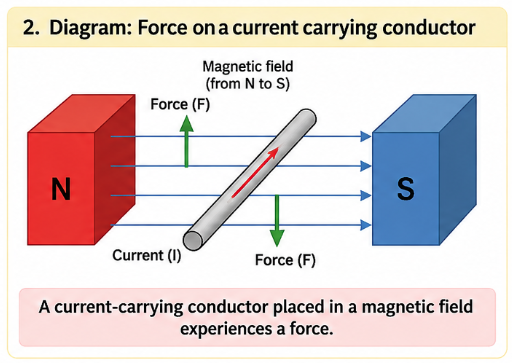
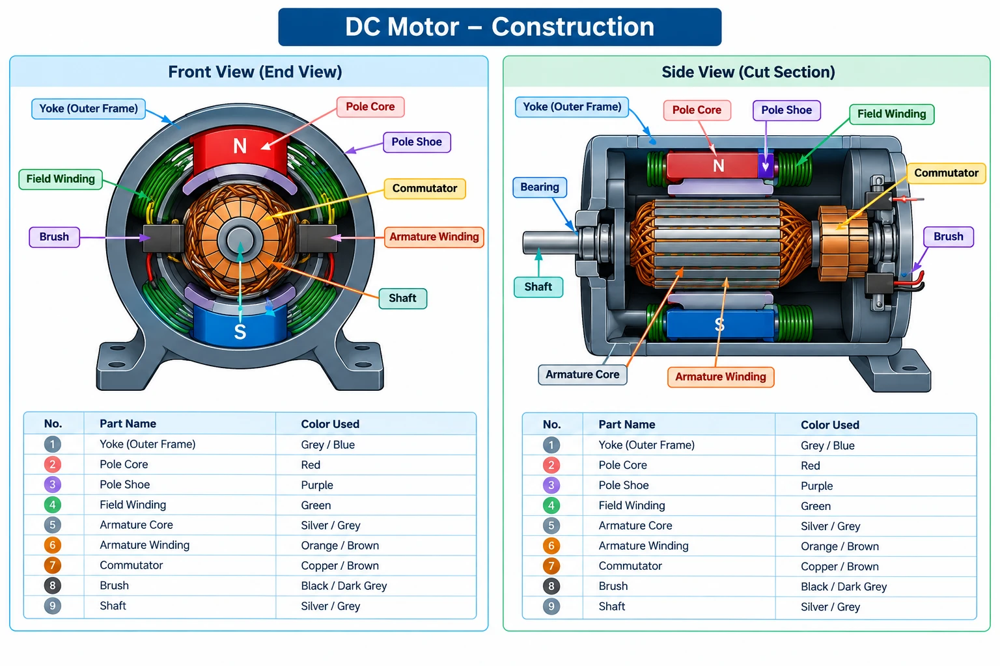

2.1 Basic Principle of Electric Motor
An electric motor is a device that converts electrical energy into mechanical energy (motion). It is the working opposite of a generator, which converts mechanical energy into electrical energy.
When a current-carrying conductor is placed inside a magnetic field, it experiences a mechanical force. In a motor, this force acts on the armature conductors and produces a turning effect called torque, which makes the motor shaft rotate continuously.
An electric motor works on the principle that a current-carrying conductor placed in a magnetic field experiences a force — this is the same force studied as F = B·I·L·sinθ, where B is flux density, I is current, L is conductor length and θ is the angle between the conductor and the field.
Everyday Example — Electric Fan
When a fan is switched ON, electrical energy is supplied to its motor. Current flows through the motor winding, and this current-carrying winding experiences a force in the surrounding magnetic field. The force produces rotation of the motor shaft, turning the fan blades and producing airflow — converting electrical energy into mechanical energy.
Finding the Direction of Force — Fleming's Left Hand Rule
Once the direction of current and the direction of the magnetic field are known, Fleming's Left Hand Rule tells us the direction in which the conductor will move.

Fig 2.1 — Force on a current-carrying conductor placed in a magnetic field
Stretch the thumb, first finger and middle finger of the left hand mutually perpendicular to one another:
- First finger → direction of the magnetic Field (N to S)
- Middle finger → direction of Current in the conductor
- Thumb → direction of the Motion / Force on the conductor
Easy to remember as First – Field, Middle – Motor-current, Thumb – Thrust.
Video — Fleming's Left Hand Rule Explained (Hindi)
2.2 Construction of DC Motor
A DC motor is physically identical to a DC generator — the same machine behaves as a motor or a generator depending on how it is used. Its parts are divided into two groups: a stationary part (Stator) that stays fixed, and a rotating part (Rotor) that turns inside it.
The stator is the stationary (non-rotating) part of the motor. It is mounted on the outer frame and its job is to produce the main magnetic field in which the rotor turns. It consists of the yoke, pole core, pole shoe and field winding.
The rotor is the rotating part of the motor, mounted on the shaft and free to turn inside the stator. It carries the armature current on which the magnetic force acts, producing the torque that rotates the motor. It consists of the armature core, armature winding, commutator and shaft.

Fig 2.2 — Construction of a DC Motor: Front View and Side (Cut Section) View, with parts labelled
| Stator (Stationary Part) | Rotor (Rotating Part) |
|---|---|
| Yoke (Outer Frame) | Armature Core |
| Pole Core & Pole Shoe | Armature Winding |
| Field Winding | Commutator |
| Brushes & Bearing | Shaft |
Part & Function
| Part | Function |
|---|---|
| Yoke | Outer protective frame; also completes the magnetic circuit and provides mechanical support. Usually made of cast iron or silicon steel. |
| Pole Core & Pole Shoe | Pole core holds the field winding; pole shoe spreads the flux over the armature and reduces its reluctance. |
| Field Winding | Carries current to produce the main magnetic field needed for motor action. |
| Armature Core | Laminated iron core that houses the armature winding and carries magnetic flux. |
| Armature Winding | Carries the load current; this is the conductor on which the force (torque) acts. |
| Commutator | Converts the supplied DC into the correct current direction in each armature coil for continuous rotation in one direction. |
| Brushes | Carbon/graphite contacts that supply current from the external circuit to the rotating commutator. |
| Shaft | Transmits the mechanical torque developed to the connected load. |
| Bearing | Supports the shaft and allows smooth, low-friction rotation. |
- The armature core is laminated (thin silicon-steel sheets insulated from each other) rather than solid, to reduce eddy current losses.
- Brushes are kept spring-loaded so they press against the commutator with constant pressure despite wear, ensuring uninterrupted current flow.
- A small, uniform air gap is maintained between the pole shoe and the armature core — too large a gap wastes magnetic flux, too small a gap risks mechanical rubbing.
- A DC motor and a DC generator share the same construction; only the direction of energy conversion (electrical→mechanical vs. mechanical→electrical) differs.
2.3 Working of DC Motor
The working of a DC motor connects everything studied so far: principle → construction → current flow → force → rotation → continuous rotation. The key idea is this — the magnetic field produces a force on the current-carrying armature conductors, and the commutator keeps the armature rotating in the same direction instead of oscillating back and forth.
Working in One Flow
- DC supply is switched ON — current flows through the motor windings.
- Magnetic field is established — field poles produce a magnetic field around the armature.
- Force acts on armature conductors — direction found using Fleming's Left Hand Rule.
- Torque is produced — forces on opposite sides of the armature create a turning effect.
- Armature and shaft rotate — the commutator keeps the torque acting in the same rotational direction.
Step-by-Step Working
When the DC supply is switched ON, current flows through the motor circuit. In a wound-field DC motor, the field winding carries current to produce the magnetic field, while current also flows through the armature winding.
The field winding is wound around the pole cores. When current flows through it, the poles act as electromagnets, setting up a magnetic field from the North pole (N) towards the South pole (S) across the air gap.
The armature conductors carry current and lie inside this magnetic field. By the basic principle of an electric motor, a current-carrying conductor in a magnetic field experiences a force — and the direction of that force is found using Fleming's Left Hand Rule.
Consider a simple rectangular coil placed between the N and S poles. One side of the coil experiences a force in one direction, while the opposite side experiences a force in the opposite direction. These two forces, acting on opposite sides of the coil, create a turning effect called torque, and the armature starts rotating.
As the armature rotates, the sides of the coil keep changing position. If the current direction in the coil stayed the same, the torque would reverse after every half turn and the motor would just oscillate. The commutator prevents this:
- The commutator rotates along with the armature.
- The brushes maintain electrical contact with the commutator.
- After every half-turn, the commutator reverses the current direction in that armature coil.
- This reversal changes the force direction on the conductors at exactly the right moment.
- As a result, torque continues to act in the same rotational direction, and the armature keeps rotating.
The commutator therefore works as a mechanical switching arrangement that converts the alternating force on each coil into continuous, one-directional rotation of the shaft.
Construction Part → Role in Working
| Part | Role During Working |
|---|---|
| Yoke | Supports the motor and provides a path for the magnetic flux. |
| Pole Core & Pole Shoe | Support the field winding and guide the magnetic flux into the air gap. |
| Field Winding | Produces the magnetic field in which the armature rotates. |
| Armature Core | Supports the armature winding and rotates along with the shaft. |
| Armature Winding | Carries current and experiences the force that produces torque. |
| Commutator | Reverses the armature-coil current at the right moment, keeping torque unidirectional. |
| Brushes | Transfer current from the external DC supply to the rotating commutator. |
| Shaft | Transfers the developed rotation to the connected mechanical load. |
| Bearings | Support the shaft and allow smooth, low-friction rotation. |
Video — Working of a DC Motor Explained (Hindi)
- A practical armature is never a single coil — it has many coils placed around the core, each connected to its own pair of commutator segments. This keeps at least one coil always producing near-maximum torque, giving smooth, continuous rotation instead of a pulsating one.
- As the armature rotates inside the magnetic field, it also behaves like a tiny generator and develops an internal voltage called the back EMF (Eb), which opposes the applied supply voltage. Back EMF is what naturally limits the armature current once the motor is running — you'll study this in detail under Speed-Torque Characteristics.
- At the instant of starting, the armature is not yet rotating, so back EMF is zero and the starting current can be very high. This is why DC motors are normally started through a starter rather than connected directly across full supply voltage.
- Reversing the direction of rotation needs reversing either the field current or the armature current (not both) — reversing both leaves the direction of rotation unchanged.